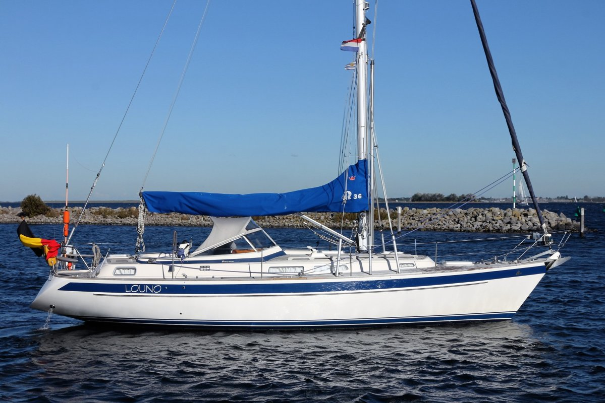

Hallberg-Rassy 36 Scandinavia
Zeer nette en complete Hallberg-Rassy 36. Nu te bezichtigen in Bruinisse! Te koop aangeboden bij uw Hallberg-Rassy importeur NovaYachting, deze fraaie Hallberg-Rassy 36 Scandinavia met diverse recente vernieuwingen ligt nu voor u klaar bij ons aan de verkoopsteiger in Bruinisse.
Lengte: 11.32m
Breedte: 3.55m
Diepgang: 1.70m
Materiaal: Polyester
Bouwjaar: 2000
Voor meer info en fotos ga een kijkje nemen op nova yachting!
